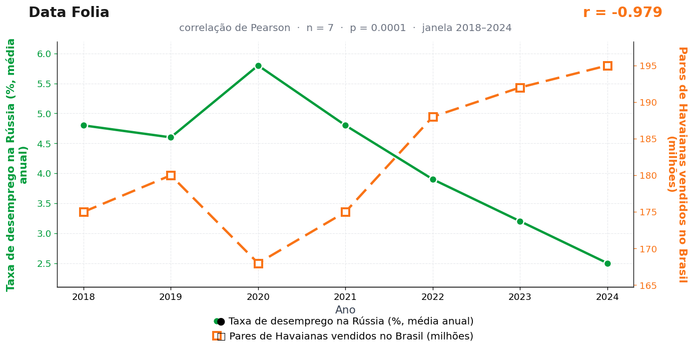

Publicação de estreia · 03/06/2026
A teoria
O chinelo mede movimento. Quando mais pares circulam no Brasil, o consumo entra em modo aberto: praia, rua, loja, viagem curta e trabalho informal.
A Rússia capta esse fluxo como termômetro da economia global. Mesmo longe da praia, o mercado de trabalho lá reage ao sinal de que as pessoas estão comprando, saindo e pisando leve.
A ligação passa pelo clima do consumo. O Brasil coloca o pé para fora; a esteira russa lê o gesto como esquentada da expectativa. O emprego acompanha o solado.
Há quem pergunte como um chinelo de borracha atravessa onze fusos horários para mexer em estatística trabalhista alheia. A resposta do nosso departamento de macroeconomia é simples: não atravessa. Mas admita que, por um parágrafo, a hipótese pareceu razoável.
O modelo prevê inclusive o cenário extremo: se cada brasileiro comprar dois pares no mesmo verão, o desemprego russo encosta em zero e a Sibéria abre concurso para salva-vidas.
A teoria é ficção; a correlação é real: r = −0,98 (n = 7, p < 0,001).
Os dados por trás

- Taxa de desemprego na Rússia (%, média anual) — 7 pontos anuais, período 2018–2024. Fonte: World Bank / Rosstat.
- Pares de Havaianas vendidos no Brasil (milhões) — 7 pontos anuais, período 2018–2024. Fonte: Alpargatas — relatórios anuais.
Como as correlações deste site são encontradas — e por que você não deve confiar nelas — está explicado na nossa metodologia.
Por que isso acontece?
Entre 2018 e 2024, a taxa de desemprego na Rússia caiu quase todo ano (de 4,8% para 2,5%), enquanto as vendas de Havaianas no Brasil subiram quase todo ano (de 175 para 195 milhões de pares). Quando duas séries têm tendência constante em direções opostas, o coeficiente de Pearson entre elas sai altíssimo — mesmo que uma nunca tenha ouvido falar da outra. O r de −0,98 não mede ligação entre chinelo e emprego; mede apenas que uma linha desce enquanto a outra sobe.
Esse é o defeito mais explorado pelo Data Folia: o Pearson enxerga co-movimento linear, não mecanismo. Qualquer série que só cresce (população, streaming, preço do café) fica automaticamente correlacionada com qualquer série que só encolhe no mesmo período. O tempo funciona como uma terceira variável escondida puxando as duas curvas.
Some a isso uma amostra de apenas 7 pontos anuais — pouquíssima informação para separar coincidência de padrão — e o fato de que garimpamos centenas de pares de séries até encontrar este. Testando combinações em massa, sempre aparece um r espetacular em algum lugar. É exatamente assim que ele apareceu aqui.
Publicação de estreia · 03/06/2026 · publicado também no Instagram @datafolia.